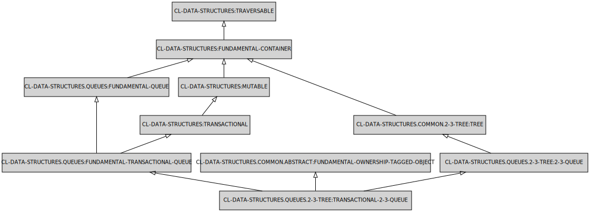

Queue structures
Queues are FIFO structures, commonly used for the implementation of scheduling systems and various breadth-first search algorithms.
API
To modify content of the functional queue use the following functions.
- PUT
- TAKE-OUT
To modify content of the mutable queue use the following functions.
- PUT!
- TAKE-OUT!
2-3-tree
2-3-tree is a trie where each subtree holds either 2 or 3 children and grows like B-tree (and as such does not need balancing).
Symbols in the package CL-DATA-STRUCTURES.QUEUES.2-3-TREE:
MAKE-FUNCTIONAL-2-3-QUEUE
Lambda List:
(&KEY (ELEMENT-TYPE T))
Returns:
Empty functional-2-3-queue
MAKE-MUTABLE-2-3-QUEUE
Lambda List:
(&KEY (ELEMENT-TYPE T))
Returns:
Empty mutable-2-3-queue
MAKE-TRANSACTIONAL-2-3-QUEUE
Lambda List:
(&KEY (ELEMENT-TYPE T))
Returns:
Empty transactional-2-3-queue
FUNCTIONAL-2-3-QUEUE
Description: An functional queue based around 2-3 tree data structur.
MUTABLE-2-3-QUEUE

Description: An mutable queue based around 2-3 tree data structur.
TRANSACTIONAL-2-3-QUEUE

Description: An transactional queue based around 2-3 tree data structure.